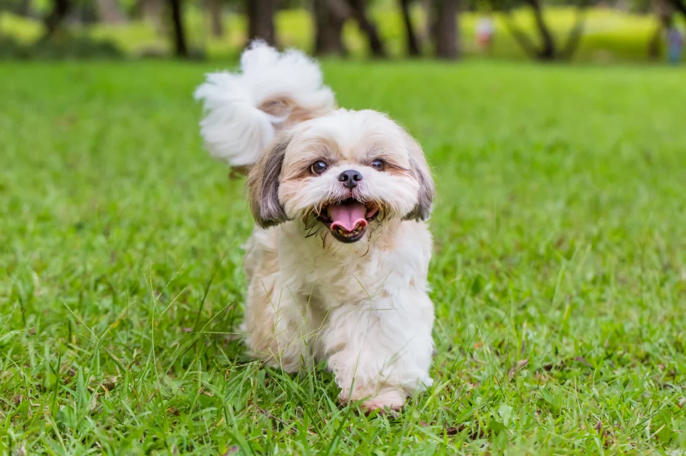

TODO: Transforme o texto "Voltar" abaixo em hiperlink que leva o usuário para a página com o sumário de todos os cachorros
Voltar
O Shih Tzu é uma ótima opção para quem busca por cães de companhia. Ele é conhecido por ser muito carinhoso, brincalhão e sociável. Além disso, não possui o costume de latir.